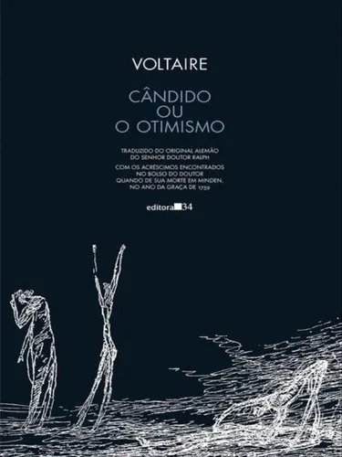
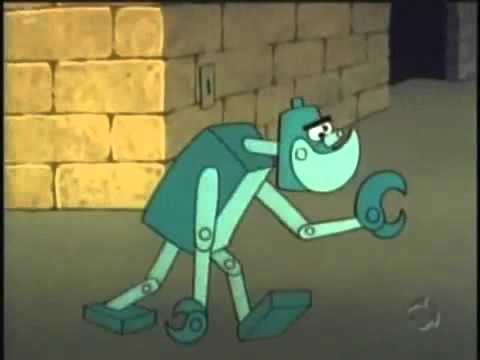

Figura 1: Capa de Cândido ou O Otimismo, da Editora 34, a edição que li.
Eu compro muitos livros. Tenho uma estante de biblioteca no meu quarto cheia deles, e como é de se esperar, eu não li a maioria. Por isso, estou tentando dar um jeito nesse monte de livros, nem que seja para eu não comprar nenhum livro mais novo até ter lido grande parte.
Resolvi, então, unir o útil ao agradável: estou participando de um clube do livro com uma amiga, que é composto por uma multidão de pessoas (no caso, apenas nós dois). Começamos com uma leitura de terror estrangeira, e na sequência, na minha vez de propor um livro, propus algo da minha própria biblioteca: Cândido ou O Otimismo, de Voltaire.
Vou falar um pouco sobre a ideia do otimismo de Leibniz, que é criticada nesse livro, e sobre algumas coisas das quais pensei a respeito enquanto o lia. Adianto aqui que não tive muito compromisso em pesquisar as ideias de Leibniz muito a fundo; em maior parte, esse texto se baseia na minha percepção da realidade e das ideias apresentadas por Voltaire ao criticar o otimismo.
Sobre a obra e ao que ela se opõe
O que vou apresentar aqui é uma versão muito resumida do intuito inicial da obra. "Cândido ou O Otimismo" foi escrito por Voltaire (sim, aquele lá do Iluminismo), no século XVIII. Trata-se de uma obra de oposição à ideia do otimismo no pensamento de Leibniz (sim, aquele da Matemática, que na verdade era polímata, ou seja, atuou em várias áreas do conhecimento).
O pensamento otimista de Leibniz (e aqui eu parafraseio a Wikipédia) pode ser resumido "na afirmação de que, sendo o universo criado por Deus, nele se torna possível conciliar o máximo de bem e o mínimo de mal, o que faz dele 'o melhor dos mundos possíveis'". Ou seja, o status quo do Universo seria necessariamente um arranjo ótimo no que tange ao bem e ao mal.
Voltaire escreveu Cândido, pelo que entendi, para CAÇOAR dessa ideia. Porque Cândido inicia a história em um lugar onde ele tem absolutamente tudo, e seu mentor Pangloss o instrui nessa mesma ideologia de otimismo de Leibniz. E então ele se vê forçado a andar ao redor do mundo e passar por todo tipo de infortúnio, e algumas situações que chegam inclusive a serem bem engraçadas.
Para início de conversa…
A meu ver, acredito que esse otimismo proposto por Leibniz e criticado por Voltaire seja… algo muito "triste", intelectualmente falando, no sentido de que, em última instância, ele nada conclui. Mas vou elaborar.
Após ler a introdução da edição que comprei, a palavra "ótimo", que nós usamos com tanta frequência na língua falada, tomou uma dimensão diferente para mim.
Quando dizemos "está tudo ótimo", o que queremos dizer, e o que isso significa de verdade? Bem, acredito que na língua falada, o "tudo ótimo" signifique algo como "tudo está bem, tudo está muito bom". Não há infortúnios, ou os infortúnios que cerceiam nossa vida são ignoráveis na balança que nos permitiria pesar, naquele momento, se nossa vida está boa ou ruim. Então a reação cognitiva imediata a uma resposta como essa seria… de que a vida está boa? Aparentemente, é assim que tratamos essa resposta.
Conversas mecânicas

Figura 2: Fale a verdade: Quantas vezes você já pensou no que você realmente quer saber do outro, quando está dizendo uma saudação comum como "Oi, tudo bem?"
Existe também um sentido um pouco mecânico quando dizemos que "está tudo ótimo". Em certa medida, nós sabemos, meio que intuitivamente, que as pessoas não desejam realmente saber como nossa vida está, quando nos perguntam "está tudo bem?". Trata-se de um iniciador de conversa, no mesmo nível do "Olá!", algo genérico e automático. Como se, na verdade, as pessoas estivessem sempre mais preocupadas com o próprio infortúnio, quando perguntam ao interlocutor sobre os dissabores da vida dele.
Lembro-me do Antônio Abujamra, no programa Provocações da TV Cultura. Ao iniciar a entrevista com um convidado, caso esse convidado ousasse inserir o automatismo "Olá, tudo bem?", a resposta imediata dele seria "Tudo péssimo, e você?", no intuito de caçoar e criticar justamente essa automatização da fala.
Um aspecto interessante que se segue mediante esse tipo de provocação (com o perdão da expressão), é que as pessoas tendem a responder com um "Por quê? O que aconteceu?", e esperam, igualmente de forma mecânica, por uma resposta da outra parte. Mas não se estenda demais na explicação! O que se busca no diálogo é uma resposta breve, um resumo breve dos seus infortúnios, daquilo que te aflige a ponto de quebrar a rotina do "Tudo ótimo, e você?". Porque nesse ponto, a conversa pode ser remediada de volta para o caminho mecânico, com uma resposta igualmente genérica. Você ouvirá "Ah, que pena!", ou mesmo um "Nossa…", ou o meu favorito: "É… Complicado".
Balanceando o estado da vida
Figura 3: Uma balança… acostume-se, vou utilizar essa alegoria até o final.
Mas vamos voltar a analisar o que queremos dizer com o "tudo ótimo". Sabemos o que isso significa, mas o que deveria realmente significar? Bem, deveria significar exatamente o que é proposto na filosofia de Leibniz. Se tudo está ÓTIMO, tudo está OTIMIZADO, ou seja, na mesma escala da balança que nos permite dosar, naquele momento, se nossa vida está boa ou ruim, tudo encontra-se com uma quantidade de coisas boas ou ruins que nos permita dizer que, se levarmos em consideração o que está bom ou ruim, as coisas estão da ÚNICA forma como elas poderiam estar naquele momento.
Veja, essa situação é no mínimo bizarra: Em nenhum momento eu disse que a balança está PERFEITAMENTE BALANCEADA. Ela pode estar pendendo para o lado das coisas boas, ou das coisas ruins1. Mas dizer que aquela é uma situação "ótima" não nos diz respeito ao balanceamento da pesagem; nos diz respeito ao fato de que, dadas as circunstâncias, não há mais nada a ser colocado em nenhum dos pratos da balança. Então o serviço já foi feito, e o que se tem, é o resultado.
A situação, de forma ideal, nos permitiria tirar duas conclusões: de que a vida está boa, ou que a vida está ruim. Mas o que o otimismo, o "está tudo ótimo", nos permite fazer, é forçar uma TERCEIRA VIA, que na verdade não existe em uma possibilidade aparentemente dicotômica. Estamos analisando a situação e dizendo "sim, a pesagem foi feita, as coisas boas e as coisas ruins foram colocadas em seus devidos lugares, e agora podemos tirar uma conclusão". E qual seria a conclusão? NÃO IMPORTA! O que importa é que a conclusão poderá ser tirada logo em seguida. Mas nós NÃO TIRAMOS a conclusão. Nós deixamos a balança como está. Nesse sentido, a "resposta" dada é tão vazia quanto a afirmação de que "existe balança", "existem coisas boas", e "existem coisas ruins". É uma conclusão que não conclui, uma mera observação do status quo que não nos leva a absolutamente nada.
Antes de qualquer coisa, é interessante ver como essa crítica nos leva também a uma segunda crítica com relação à praticidade desse resultado: uma observação que nada conclui seria algo INÚTIL. Mas essa "inutilidade" só existe de um ponto de vista utilitário. Novamente estamos criando outra balança, dessa vez pesando com um pensamento utilitarista, dizendo respeito ao impacto prático dessa falsa conclusão… o qual acredito que damos valor em excesso. Mas esse seria um assunto para outro momento2.
A semântica final do "tudo ótimo"
O que queremos dizer, então, com o nosso "tudo ótimo", quando perguntados sobre como está nossa vida? Bem, queremos apenas dar uma resposta genérica da observação da realidade. Para mim, depois de ler Cândido e depois de meditar sobre a filosofia de Leibniz no sentido do otimismo, o "tudo ótimo" não significa absolutamente NADA. Ele é proferido, na maioria das vezes, sem que as pessoas pensem muito a respeito do que isso significa; e por isso, sua semântica acaba sendo vazia. E para aqueles que realmente param e pensam a respeito do que essa expressão significa, o resultado acaba sendo igualmente vazio, porque não responde à pergunta, apesar de parecer responder. Porém, o "tudo ótimo", bizarramente, está exatamente no lugar onde deveria estar: A resposta sem nenhuma conclusão é dada a uma pergunta que, na realidade e na maioria das vezes, não queria também obter resposta com significado algum. Queria apenas iniciar uma conversa, e o que for importante vem depois dessa interação inicial.
O otimismo, portanto, pode ser comparado ao processo de "otimização" de um código-fonte, da forma como realizado na computação, no âmbito de que a semântica final do código deve permanecer a mesma. Ou seja, passa de forma ilesa pela realidade das coisas, como se nada houvesse realmente acontecido. Para a computação, é uma operação desejável; mas no âmbito ético, é um simulacro de vida feliz, que não leva a autocrítica alguma. E com isso, nós otimizamos também as saudações, mais até do que imaginávamos, a ponto de tratarmos este como um cenário de felicidade, que isenta a pessoa ou os interlocutores de qualquer reflexão posterior.
Notas de Rodapé:
Veja só que interessante: a filosofia de Leibniz propõe que haja o balanceamento entre coisas boas e um mínimo de coisas ruins. Mas ninguém disse que o mínimo de coisas ruins não poderia simplesmente superar a quantidade de coisas boas.
Em geral, tomo muito cuidado com o viés utilitário de certas conclusões. Acredito fielmente que nem tudo precisa possuir uma utilidade prática e um impacto visível e imediato na realidade. Aliás, sempre me pareceu que a maioria das coisas interessantes eram as coisas inúteis. Talvez um dia eu disserte melhor sobre isso.